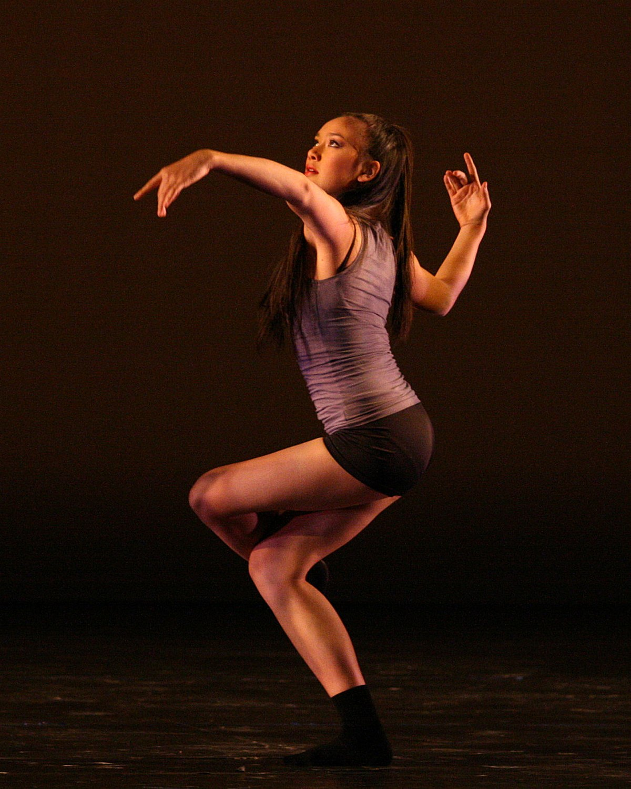
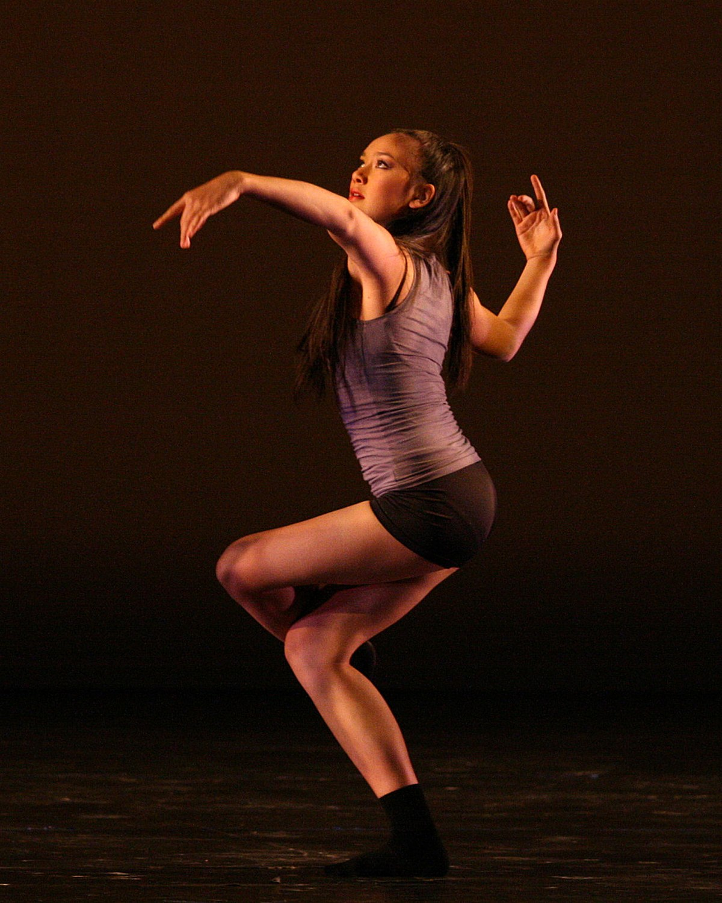
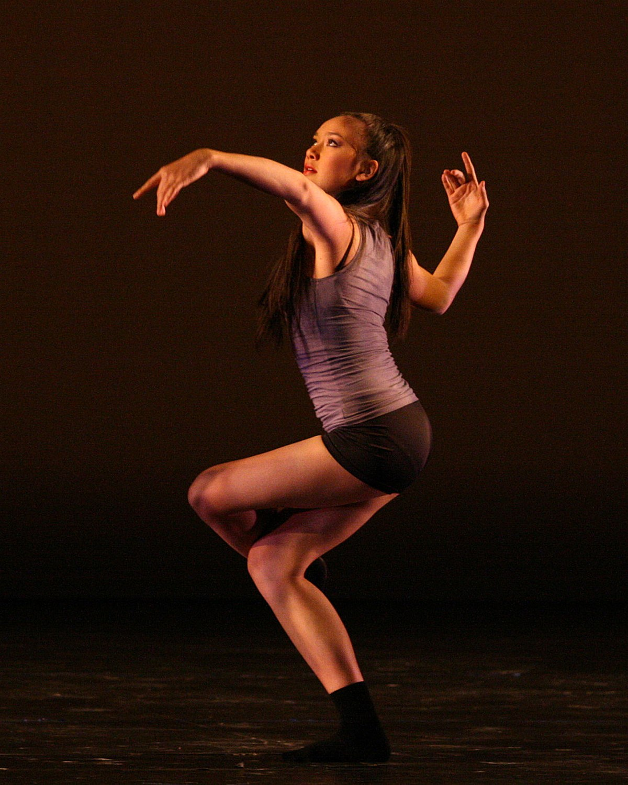
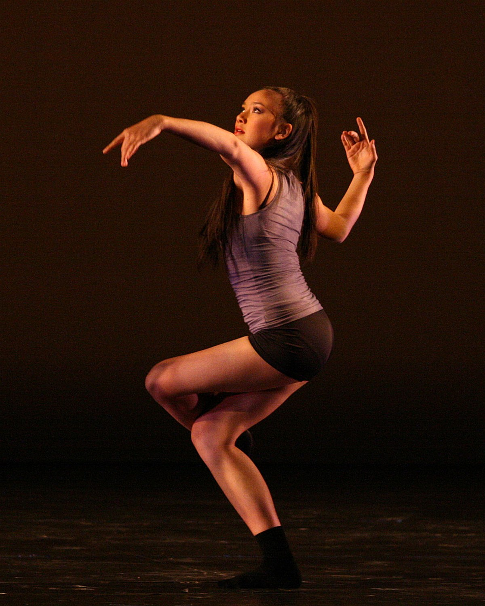

 

Ballet dance developed during the Italian Renaissance, before evolving in France and Russia into a concert dance meant for public performance. This is in the form of a ballet, in which the dance is choreographed with classical music. Ballet productions vary between using elaborate costumes and staging and using and bare staging.
Ballroom dance is a type of partner danceoriginating at the end of the sixteenth century in France. Commonly used as shorthand for any partner dance, ballroom has today evolved into two main subgenres – standard/smooth and Latin/rhythm. Dances within these categories include the waltz, tango and foxtrot,bolero and samba. Ballroom is a popular form of competitive dance, or dancesport, with competitions being held all over the world.
Contemporary dance is now one of the most popular and technical forms of dance studied and performed professionally, especially in the US and Europe. Contemporary dance has evolved to incorporate many characteristics of a broader range of dance forms. Known for its emphasis on strong torso and legwork, contract and release, fall and recovery and floor work, it is often known for unpredictable and disordered changes in speed and rhythm throughout a performance.
Hip-hop dancing refers to a range of street dances that developed in relation to hip hop music and culture. Main styles of hip-hop dancing include Breaking, Locking and Popping, with derivative styles emerging out of these including Memphis Jookin’, Turfing, Jerkin’ and Krumping. Today, hip-hop is performed in outdoor spaces, in dance studios and competitively. Unlike many competitive dance styles, hip-hop is often improvisational with dance crews challenging each other to dance battles.